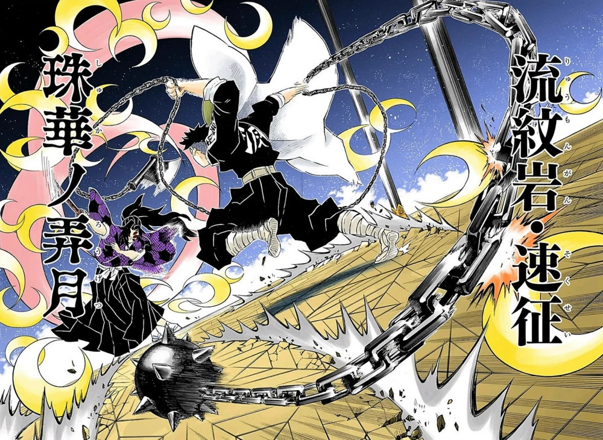
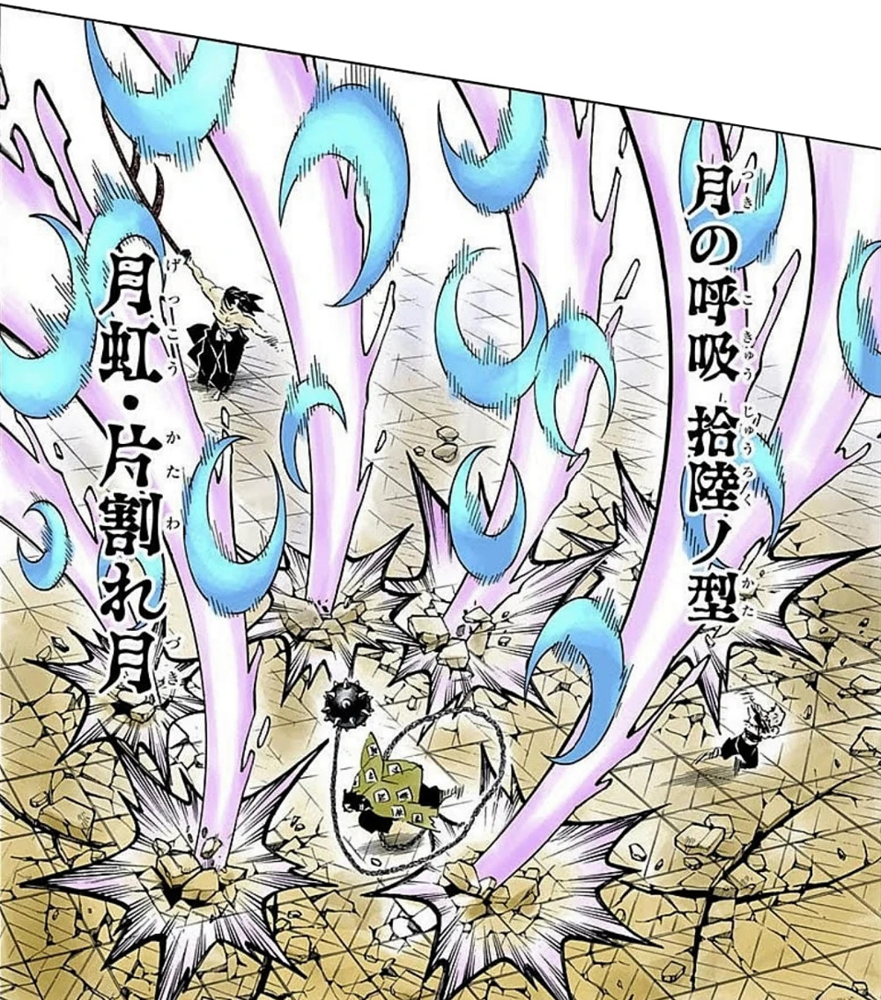

Kokushibo
História
O ex-humano era quem iria ser um padre. A mãe de ambos, então, veio a falecer devido a uma doença que já a afetava há um bom tempo. O ainda humano sentiu inveja de seu irmão, pois este sempre soube da doença de sua progenitora e como a mesma estava sofrendo. Dez anos após o ocorrido, o Lua Superior conseguiu construir uma família com uma vida pacífica, mas, em um acampamento, foi atacado por um Demônio. Porém, foi salvo por Yoriichi, que havia se tornado um Exterminador de Onis. Decidiu, então, seguir o mesmo caminho de seu irmão; juntar-se aos caçadores.
Michikatsu aprendeu a usar a Respiração da Lua, um derivado da Breath of the Sun. Kibutsuji Muzan oferece a Kokushibo a chance de se tornar um Demônio. Tendo a vontade de ficar mais forte e viver para sempre, aceita a proposta e vira um Oni. 60 anos depois, acontece um reencontro entre os Tsukiguni. O caçador estava vivo, mesmo muito velho. O Lua Superior fica impressionado, mas pensa que seu irmão estaria prestes a morrer, afinal, seu auge já havia passado há muito tempo. Entretanto, Yoriichi, em uma velocidade absurda, faz um corte em Michikatsu, que achava que iria falecer; porém, antes de dar o golpe final, o usuário da Respiração do Sol morre por causas naturais, ou seja, pela idade. Então, o samurai viveu por centenas de anos tendo a impressão de que jamais teria uma morte digna.
Habilidades
Como um Hashira, Rengoku é um espadachim muito poderoso. Até mesmo Demônios tão fortes
quanto Akaza, Lua Superior 3 e o quarto mais forte dos Demônios conhecidos, reconheceram a força
de Kyojuro. Ele até chegou a se oferecer para transformar Kyojuro em um Demônio para que ele
pudesse ultrapassar seus limites humanos e se tornar mais forte, algo que ele só ofereceu a
espadachins cujas habilidades ele acreditava serem refinadas ao máximo.
Akaza também elogiou seu espírito de batalha e afirmou que está se aproximando do “domínio da
supremacia”, o que significa que ele estava incrivelmente perto de obter o Mundo Transparente,
se apenas ele poderia despertar sua Marca do Caçador de Demônios. Seu pai, Shinjuro Rengoku,
afirmou que, depois que seu filho abandonou o que lhe ensinou, Kyojuro Rengoku se treinou para o
nível de Hashira após ler um livro de instruções do estilo de respiração das chamas, um livro
que tinha apenas 3 volumes.
Como todos os Caçadores de Demônios habilidosos, Kyojuro tem sentidos incrivelmente apurados,
como quando ele foi capaz de sentir e perceber a imensa presença de Akaza e a aura demoníaca que
ele usa para discernir que ele era um Nível Superior. Kyojuro também foi capaz de sentir
presenças demoníacas com mais rapidez e precisão do que Tanjiro Kamado, que possui um olfato
agudo, quando detectou dois demônios um após o outro em um trem antes que alguém notasse. Essa
habilidade também permite que ele avalie com precisão as habilidades regenerativas e as
fraquezas da maioria dos Demônios, como Enmu.
Respiração da Lua
Primeira Forma: Yamizuki – Yoi no Miya (Lua Negra – Palácio da Tarde)
Segunda Forma: Shuka no Rogetsu (Flores de Pérola)
 Kokushibo faz vários cortes no ar que o defendem de ataques próximos enquanto criam uma barragem de luas crescentes.
Terceira Forma: Enkizuki – Tsugari (Lua Repugnante – Correntes)
Quinta Forma: Geppaku Saika (Redemoinho Calamitoso do Espírito Lunar)
Sexta Forma: Tokoyo Kogetsu – Muken (Noite Perpétua, Lua Solitária – Incessante)
Sétima Forma: Yakkyo – Zukibae (Espelho do Infortúnio – Enluarado)
Oitava Forma: Getsuryu Rinbi (Cauda Circular do Dragão da Lua)
Nona Forma: Kudaritsuki – Renmen (Lua Descendente – Fases Perpétuas)
Décima Forma: Senmenzan – Ragetsu (Lua Através das Folhas de Bambu)
Décima Quarta Forma: Kyohen – Tenman Sengetsu (Catástrofe – Lua Crescente Tenman)
A Décima Quarta Forma é uma versão mais avançada e poderosa da Quinta Forma. Com ela, Kokushibo balança sua espada e cria um vórtex extremamente caótico de cortes multidirecionais capazes de destruir qualquer coisa que esteja em seu alcance.
Décima Sexta Forma: Gekko – Katawarezuki (Arco-Íris Lunar: Lua Fragmentada)
 Este ataque é forte o bastante a ponto de criar pequenas crateras no local de impacto de cada um dos seis cortes. Além disso, a Décima Sexta Forma é extremamente última para sobrepujar vários inimigos de uma vez por um ataque tão amplo.